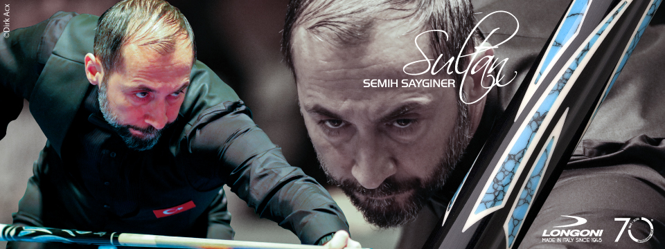

Amerikalı bilardosu, bilardonun bugüne kadar gelebilen ilk cepli bilardo çeşididir. Amerikan bilardosu adından da anlaşılacağı gibi Amerikalıların keşfettiği bilardo çeşididir.
Amerikan bilardosunda düz olarak adlandırılan 1-7 arasında numaralanmış yedi tane top, çizgili (pijamalı) olarak adlandırılan 9-15 arasında numaralanmış top, 8 numaralı
siyah bir top bir de vuruş yapılan beyaz top vardır. Yani tam olarak 16 tane top vardır.

Oyun, 2 kişi ya da 2 takım olarak, Bantlı veya Bantsız olarak oynanabilir. Oyunun amacı iki gruptan birini tamamlayıp siyah topu en son topun girdiği cep’e veya oyuncunun değiştirmemek
kaydıyla deklare edeceği cep’e girdirmesidir. “Bantsız” (topların cep'e girmeden önce veya Beyaz topun oyuncunun deklare ettiği topa değmeden önce bantı görmesi zorunlu değildir)
Oyun, topların şamadan farklı olarak (1 ve 15 numaralı toplar 3 ve 10 numaralı topların yerini alır) dizildikten sonra beyaz topun masanın diğer tarafından, masanın ilk çeyrek çizgisinden, oyuncunun
istediği açıdan vurarak başlar. Cep'e ilk giren top oyunu başlatan oyuncunun hangi grupla oynayacağını belirler, açılışta top düşmemesi halinde rakip oynayacağı grubu seçer,
açılışta iki farklı gruba ait topların cep’e girmesi faul sayılmaz, giren toplar çıkartılmaz, gruplar seçilerek oyun rakibe geçer. Oyun başladıktan sonra oyuncu her vuruşta hangi topu hangi cep'e girdireceğini vuruş öncesi deklare etmek zorundadır. 1 numara ve 15 numara toplar
farklı olmak kaydıyla orta ceplere girdirilmesi zorunludur. İlk açılış ta 1 veya 15 numaralı toplardan birinin veya ikisinin ceplerden birine girmesi halinde cepten çıkartılmaz ve oyun devam eder, biri girmesi halinde rakip diğer topu orta ceplerden birine girdirmek zorundadır.